Ai Agent
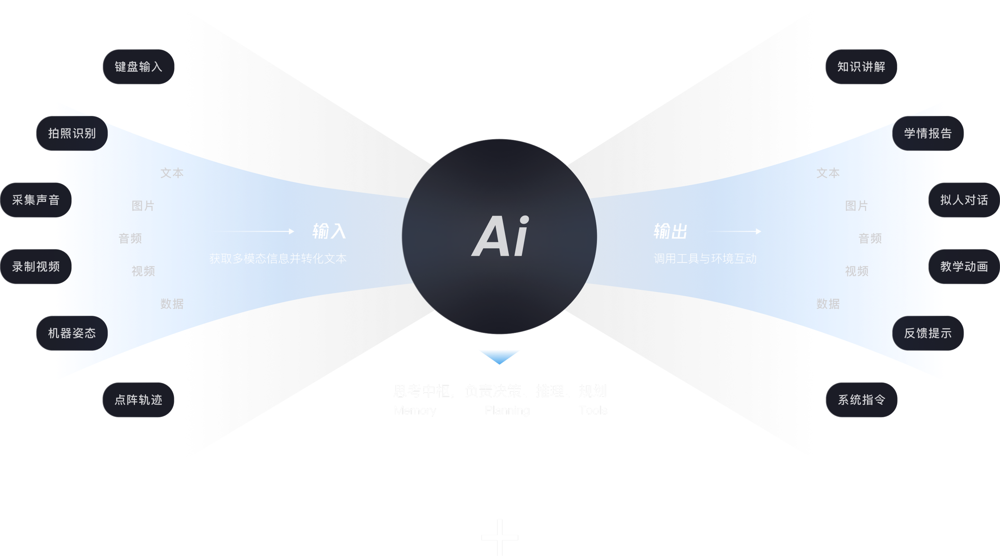
桌前学习场
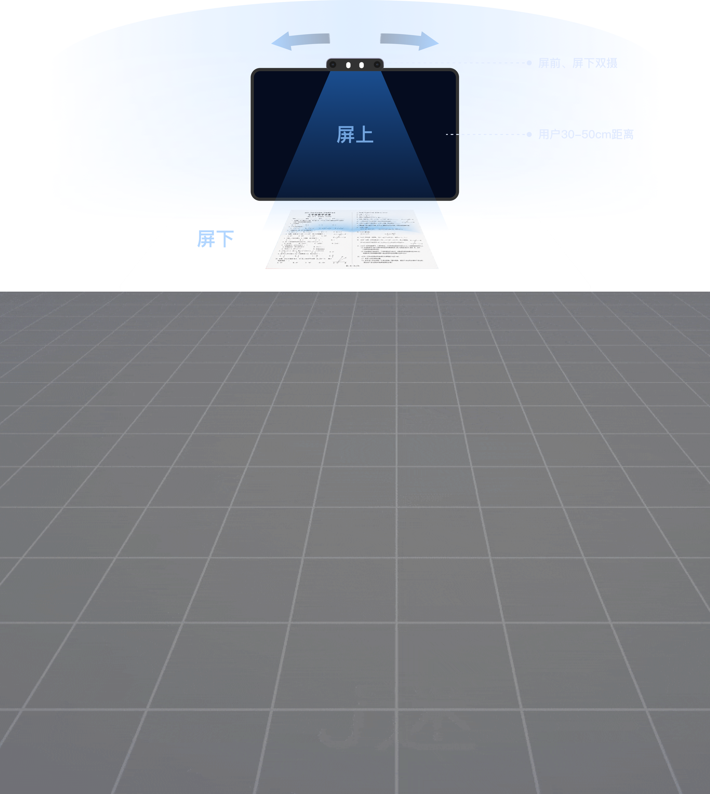
除了移动端关注的手势交互外 桌面学习机额外关注空间交互
小思1V1
项目背景：受制于教育不可能三角，高品质、个性化、普惠化辅导难以兼得，传统真人 1 对 1 成本高昂，市面学习机大多仅提供搜题给答案模式，缺乏启发式引导，基于此学而思打造小思 1V1，落地具备纸屏互动能力的 AI 个性化辅导方案
阶段一：识别与启动
对 小思1V1 Agent 而言：首次传入的题目信息 = 本次会话的【全局初始上下文锚点 + 领域任务目标】 它不只是一段文本 / 一张图片，是整轮交互式讲题会话的任务边界、知识基线、约束根信息。简言之：一道题目 = 独立 Agent 会话
图像 → OCR 识别题干文字 + 增强回显 + 题目区域裁剪 → 结构化题目信息
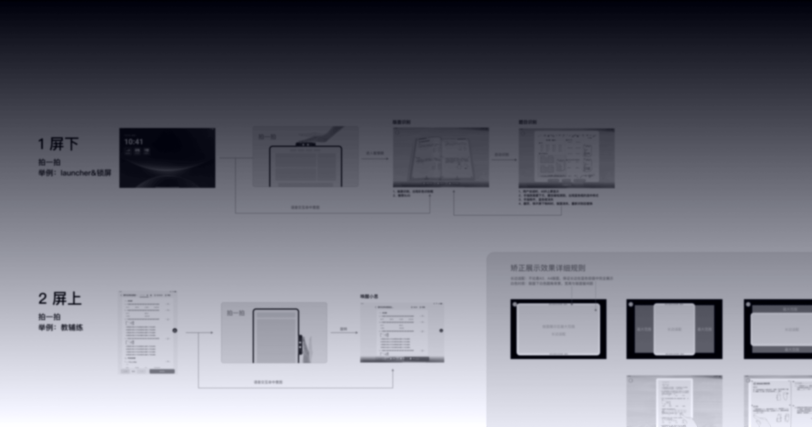
阶段二：讲解与提问
进入讲解环节：完全基于题目信息+上下文进行多轮对话 在System Prompt中，定义1V1 Agent是一个主动引导学生的专业老师。不同的题目有不同的讲解方式，不同的意图调用不同的工具
教学讲解为主线 / 讲解调自研大模型 / 非讲解调LLM / 口算调自研工具……
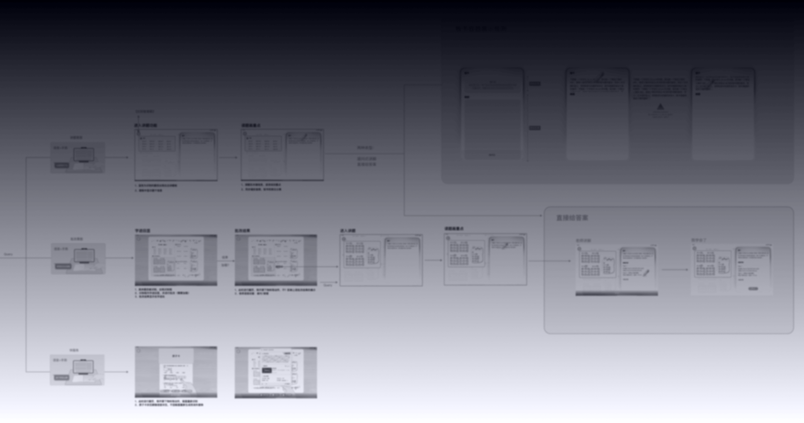
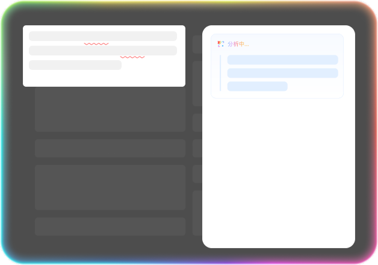
原题画重点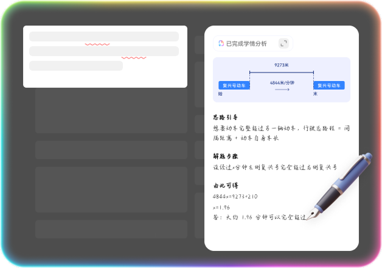
思路讲解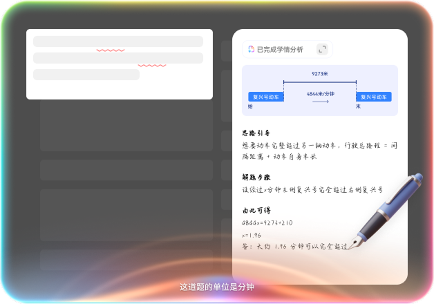
语音问答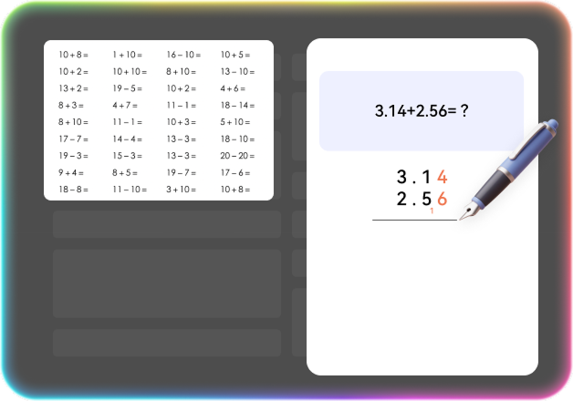
其他工具阶段三：屏下作答
多模交互：让机器听懂、看懂学生的问题和反馈 对图片信息的解析和位置识别可以实现【原题圈画】、【原题批改】、【用户作答字迹批改】等功能
图像 → OCR 识别字迹 + 对比上一帧变化 → 字迹回显 → 判定对错
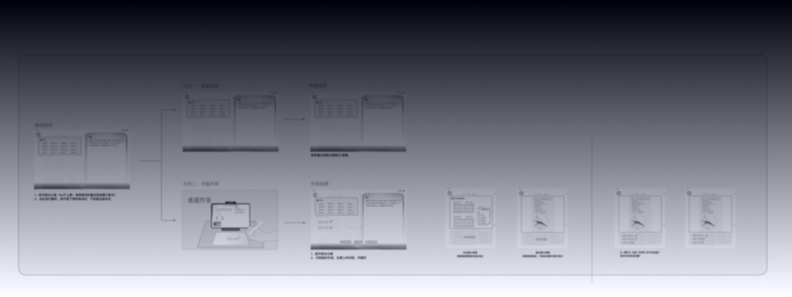
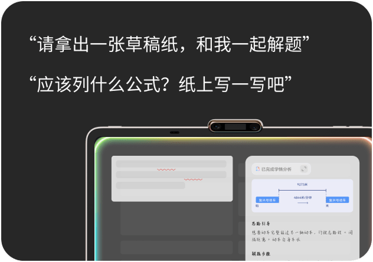
引导纸上答题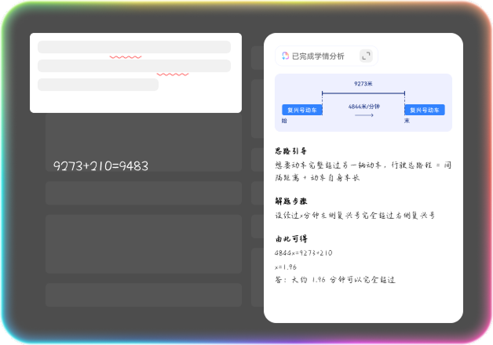
过程批改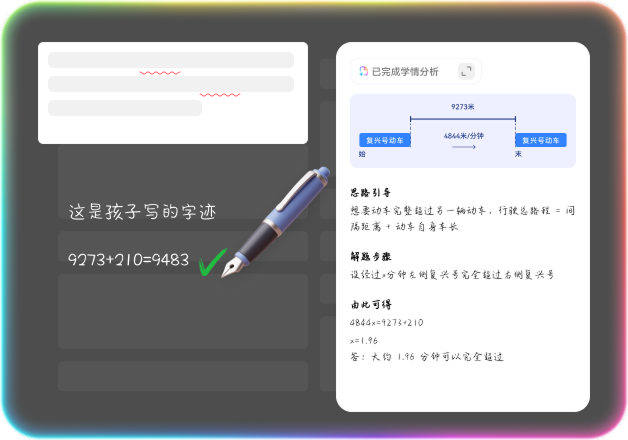
作答批改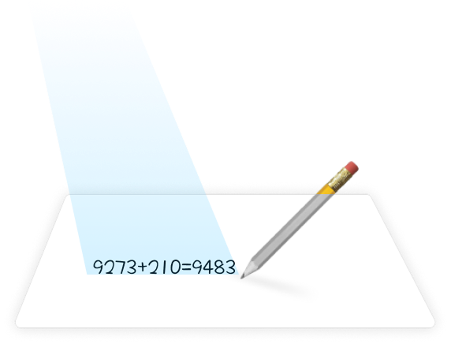
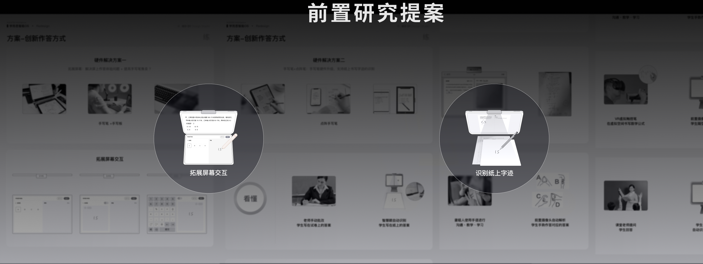
迭代优化
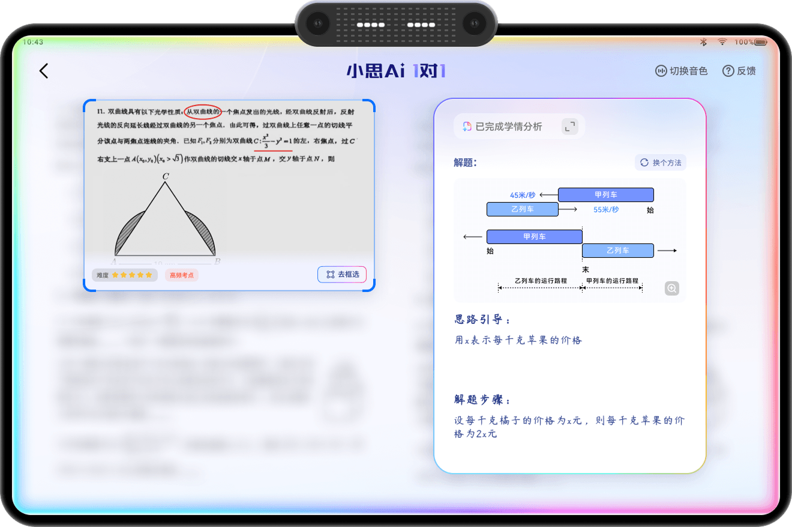
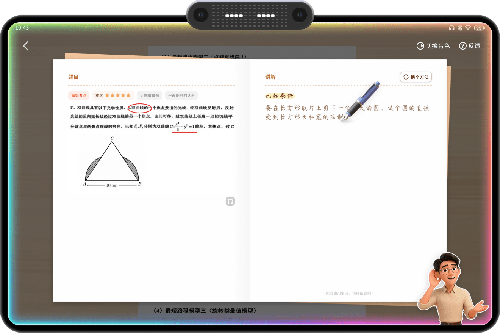
体验问题：
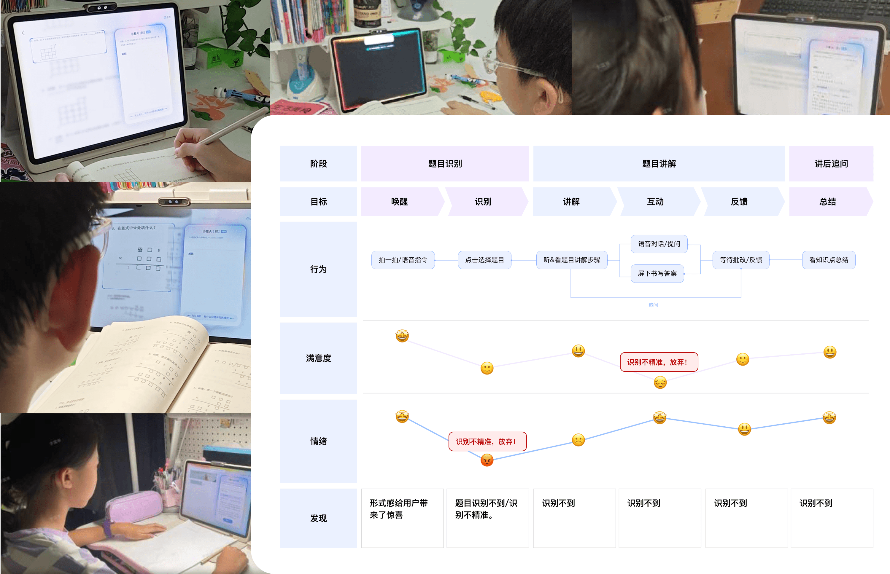
OS Agent 与 1V1 Agent
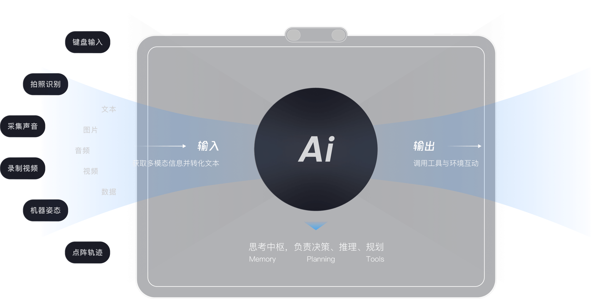
子代理